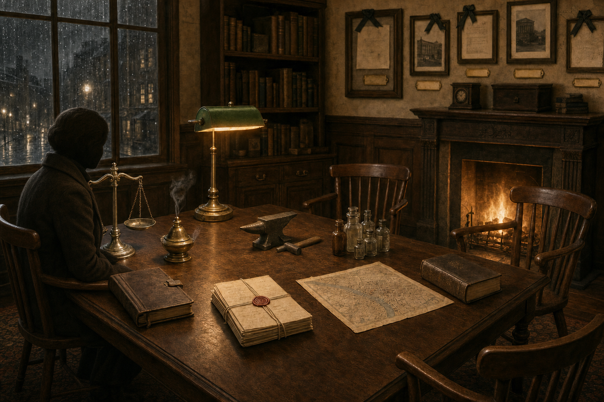
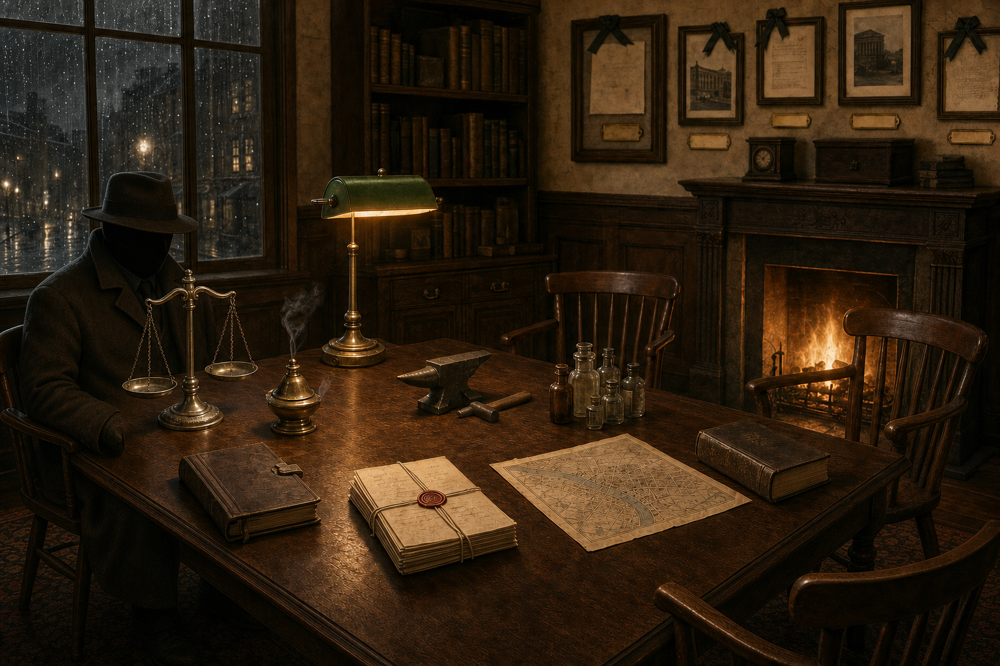
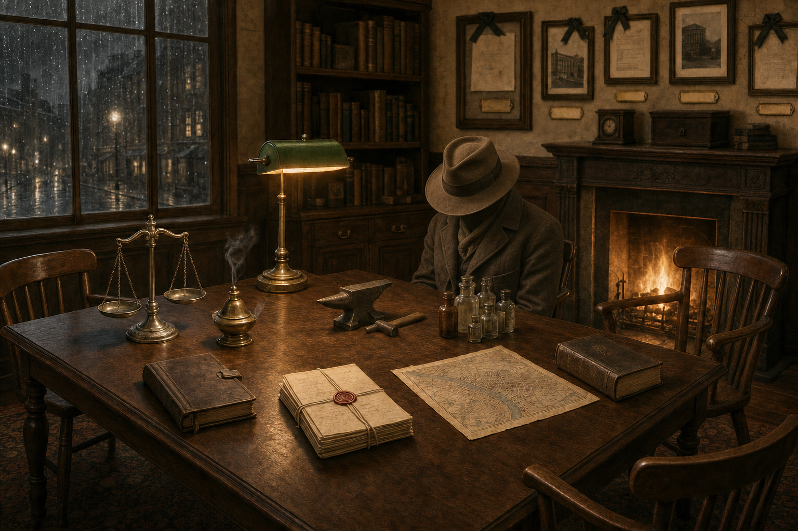
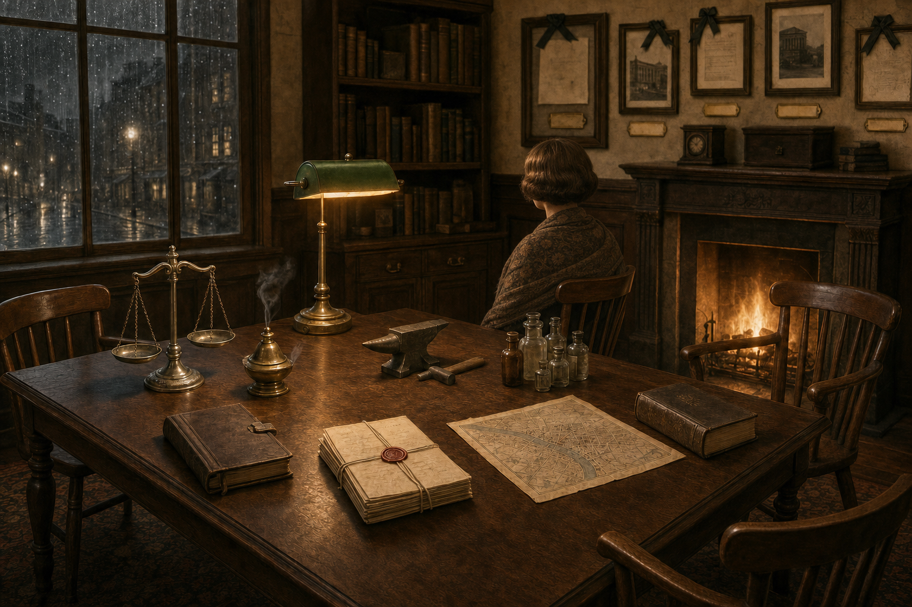
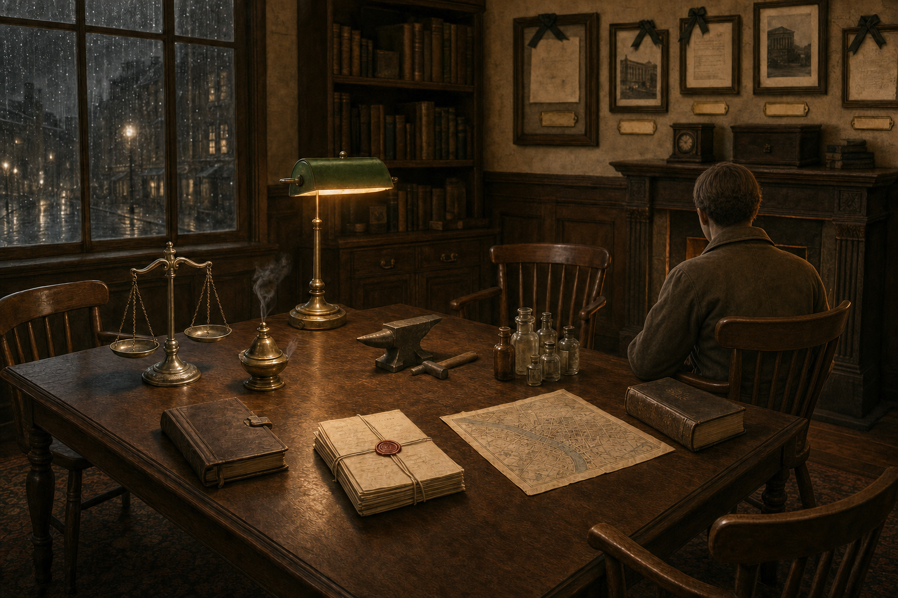
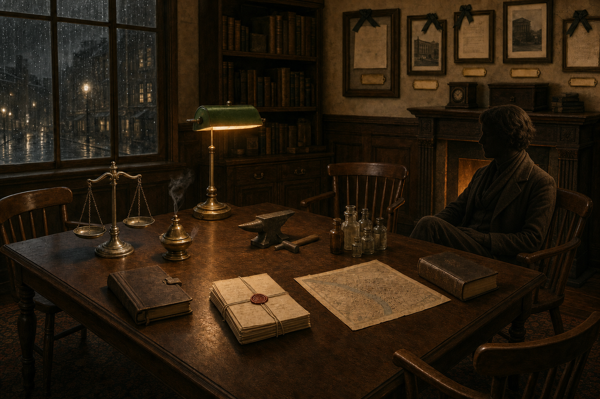
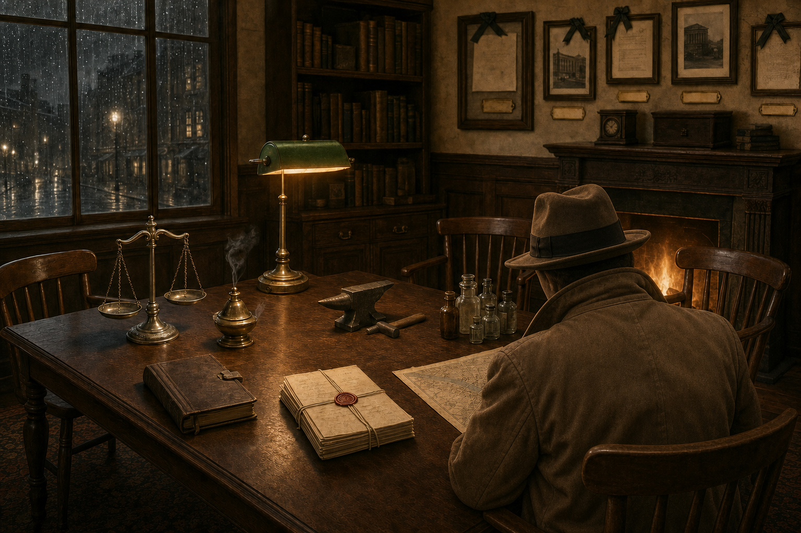
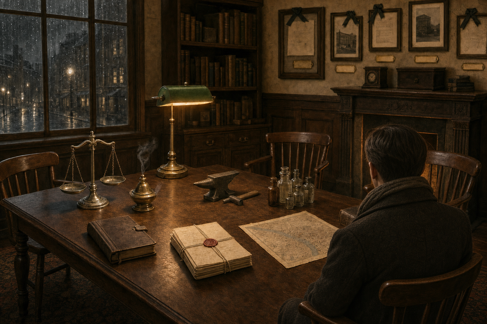

固定背景基準
所有候選都從同一張無人書房出發；比較時請看人物是否真的坐進原椅、是否保留桌面入口，以及光源有沒有接續。

座位 1｜左側窗邊
重點：窗冷灰 rim、檯燈暖 fill、左側裁切後仍看得懂坐姿。

較像正在聽講，輪廓柔和。

職業輪廓較明確，帽沿吃掉部分窗光。
座位 2｜後方中央
重點：桌面遮擋合理、檯燈頂光、正面座位仍不能出現具象臉孔或黑洞臉。

用帽沿完整遮臉，姿勢集中於桌面。

不靠黑臉處理匿名性，肩線與披肩層次較清楚。
座位 3｜右側火爐
重點：火爐暖 rim、椅臂接觸、人物不得和火光黏成一團。

接縫最自然，衣褶中間調清楚。

姿勢差異較大，側面仍偏暗，供比較匿名程度。
座位 4｜右下前景
重點：前景比例、不要遮掉主要桌面資訊、椅背與人物的前後關係。

存在感強，但遮擋面積較大。

留出較多地圖與桌面，前景負擔較低。
上一輪主角素材 PASS
棋子直接重用，不花生成額度重做；此列只確認人影方向不會推翻已通過的高彩主角層。


上一輪特效方向 WARN
本輪不修改。正式上線前必須去除矩形邊界，成為獨立去背素材。
 轟！
轟！ 碰！
碰！